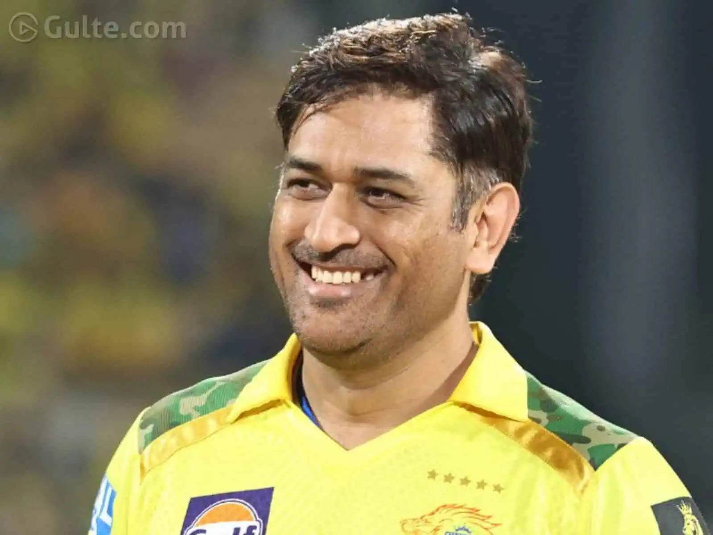

Dhoni was born on 7 July 1981 in Ranchi, Bihar (now in Jharkhand) in a Hindu Rajput family to Pan Singh and Devaki Devi.[2][3] His parents hailed from Lwali village in the Almora district of Uttar Pradesh (now Uttarakhand). He was the youngest of three children.[4][5][6] His family spells the surname as "Dhauni".[7] The spelling "Dhoni" emerged due to a spelling mistake in his school certificates and, despite repeated attempts by his family, has never been rectified.[8] Dhoni did his schooling from DAV Jawahar Vidya Mandir, where he started playing football as a goalkeeper, but later moved to play cricket on the suggestion of his coach Keshav Banerjee.[9][10] From 2001 to 2003, Dhoni worked as a Travelling Ticket Examiner (TTE) at Kharagpur under South Eastern Railway zone of Indian Railways.[11][12]